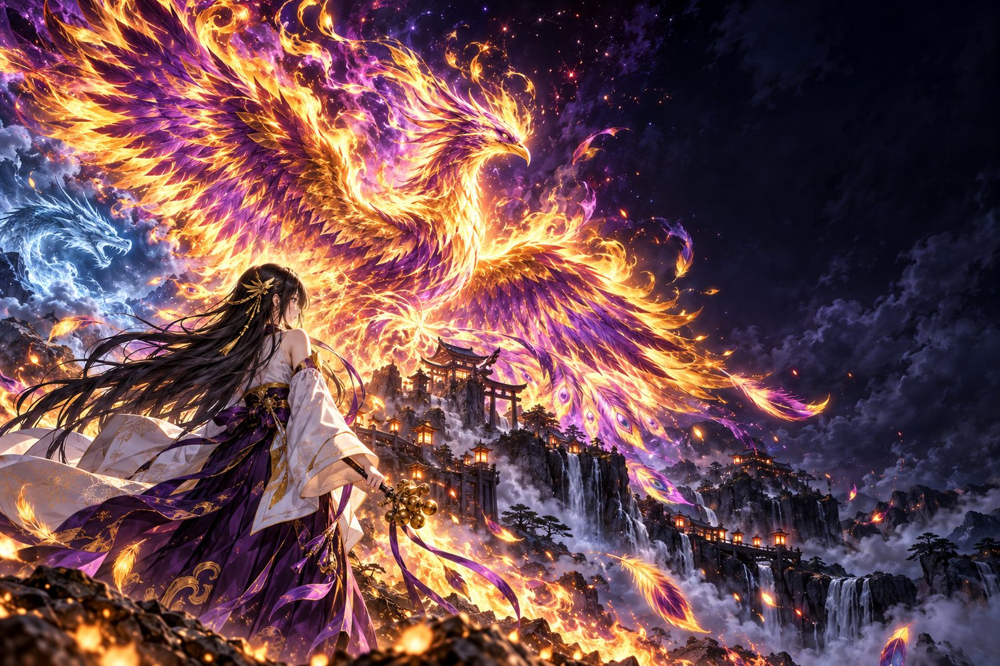
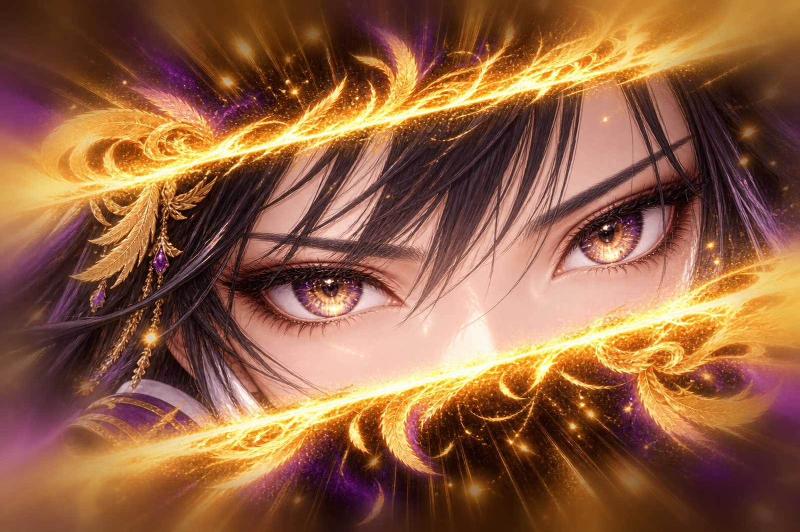
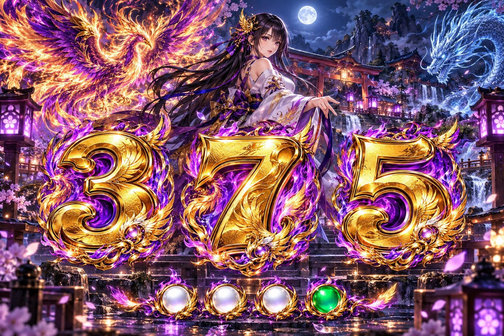
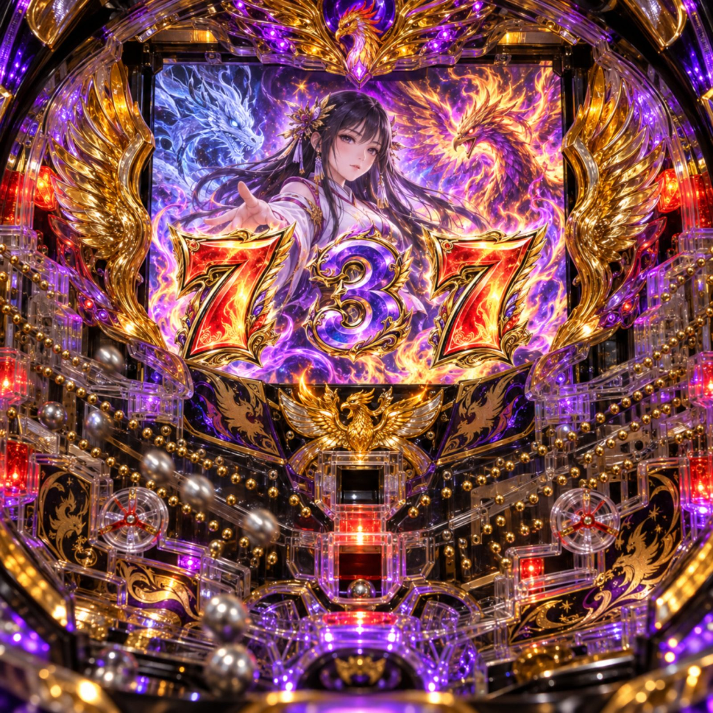
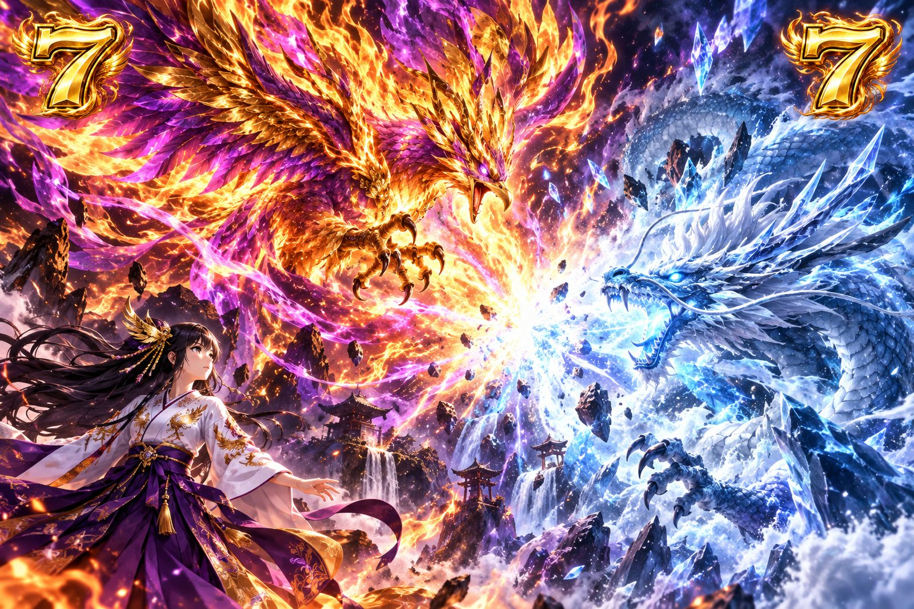
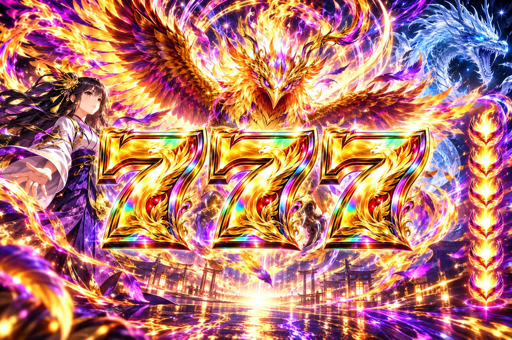
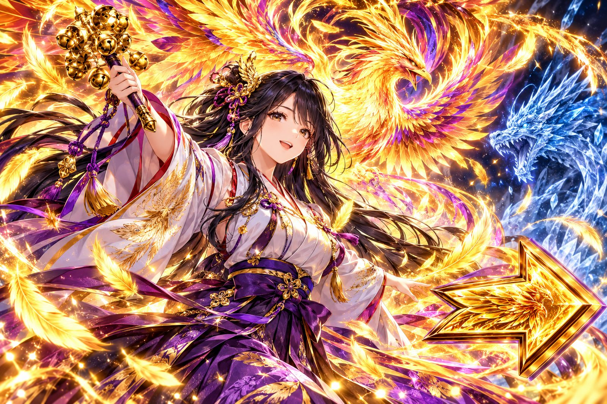

色の序列
| 色 | 期待度 |
|---|---|
| 青 | ★☆☆☆☆ |
| 緑 | ★★☆☆☆ |
| 赤 | ★★★☆☆ |
| 金 | ★★★★☆ |
| 鳳凰柄 | 大当り濃厚 |
保留・セリフ・
架空メーカーの架空機種です
機種情報/
シーアール

焔は、
紫金の焔をまとう
| 型式名 | CR幻焔鳳凰FPZ |
|---|---|
| メーカー名 | 両丸水産 |
| 導入開始日 | 導入予定なし |
| タイプ | パチンコ／ |
| 大当り確率 | 1/399.6（低確率時） |
| 確変突入率 | 80％ |
| 確変継続 | 次回大当りまで |
| 時短回数 | 100回転 |
| ラウンド数 | 4R or 16R |
| 賞球数 | 3&2&10&15 |
| 大当り出玉 | 約540個 or |
| 電サポ回転数 | 100回転 or |
| 大当り | 出玉 | 割合 |
|---|---|---|
| 16R確変 | 2,160個 | 20％ |
| 4R確変 | 540個 | 60％ |
| 4R通常 | 540個 | 20％ |
| 大当り | 出玉 | 割合 |
|---|---|---|
| 16R確変 | 2,160個 | 60％ |
| 4R確変 | 540個 | 20％ |
| 4R通常 | 540個 | 20％ |

| 色 | 期待度 |
|---|---|
| 青 | ★☆☆☆☆ |
| 緑 | ★★☆☆☆ |
| 赤 | ★★★☆☆ |
| 金 | ★★★★☆ |
| 鳳凰柄 | 大当り濃厚 |
保留・セリフ・
筐体上部の
| カスタム | 内容 |
|---|---|
| 鳳凰ランプ | 保留入賞時の |
| 一発告知 | ランプ点灯以外の |
| 焔巫女プレミア | カットイン発生時の |
遊技開始前に

| パターン | 信頼度 |
|---|---|
| 赤 | 約18％ |
| 金 | 約62％ |
| 鳳凰柄 | 大当り濃厚 |
リーチ後半に発生する

| 保留色 | 信頼度 |
|---|---|
| 緑 | 約6％ |
| 赤 | 約31％ |
| 金 | 約70％ |
| 鳳凰柄 | 大当り濃厚 |
入賞時または

| パターン | 信頼度 |
|---|---|
| 翼が開く | 約45％ |
| 翼が開いて | 大当り濃厚 |
液晶の左右に

| パターン | 信頼度 |
|---|---|
| タイトル白 | 約24％ |
| タイトル赤 | 約51％ |
| タイトル金 | 約83％ |
| トータル | 約38％ |
本機の
| パターン | 信頼度 |
|---|---|
| そのまま決着 | 約3％ |
| 鳳凰降臨リーチへ | 約38％ |
焔巫女が

| 項目 | 内容 |
|---|---|
| 継続率 | 80％ |
| 大当り確率 | 1/39.9 |
| 16R比率 | 60％ |
高確率1/39.9、
| 項目 | 内容 |
|---|---|
| 時短回数 | 100回転 |
| 引き戻し期待度 | 約22％ |
通常大当り後に

| 楽曲 | 解放条件 |
|---|---|
| 幻焔 | 初期解放 |
| 巫女の祈り | 初期解放 |
| 蒼氷 | 3連チャン |
| 極焔 | 5連チャン |
| 鳳凰降臨 | 10連チャン |
右打ちで消化。